Jongha Lee
소프트웨어 개발자 · ROS2 · Unity · 컴퓨터비전 · 시스템 통합
About
사용자가 무엇을 원하는지 파고들고, 실제로 돌아가게 만듭니다.
시각장애인 안내 로봇은 당사자를 직접 인터뷰해 필요한 것을 정하고 실기체에서 동작시켰습니다.
전동휠체어 자동 주차는 인식 방식이 안 되겠다고 판단해 곧바로 다른 방식으로 바꿨습니다.
3D 잠입 액션 게임 DelRev에서는 직접 플레이하며 찾은 문제를 반영해 플레이어 시스템과 사운드를 만들었습니다.
실서비스로 배포한 백엔드, 직접 구축한 쿠버네티스 클러스터, 상용 출시한 음악도 같은 방식으로 만들었습니다.
Skills
Education
전공 학점 4.35 / 4.5 · 평점 평균 4.22 / 4.5 · 교육부 예술체육비전 장학생
Research
정부지원 연구센터 과제로 시각장애인 안내 로봇 · 전동휠체어 자동 주차 시스템 개발
시각장애인 당사자 인터뷰 기반 요구사항 도출 · ITRC 인재양성대전(코엑스) 시연
Awards
산업통상자원부 · KIAT · 단국대학교 공학교육혁신센터
Projects
Robotics & Embedded
시각장애인 실내 안내 로봇
문제 — 시각장애인의 실내 이동에서 가장 막히는 것은 층간 이동입니다. 엘리베이터는 버튼 위치가 제각각이고, 로봇–엘리베이터 연동은 승강기 제조사와 제작 연도마다 제어 방식이 달라 쓸 수 있는 표준 API가 없습니다(국가표준 KS도 제정 중).
왜 비어 있나 — 기존 안내 로봇들은 사용자를 버튼 앞까지 데려가고 조작은 사용자에게 맡깁니다. 버튼을 못 보는 사람에게 그것은 문제를 옮긴 것이지 푼 것이 아닙니다.
해결 — 연동 규격에 기대지 않고, 상용 플랫폼(Hello Robot Stretch SE3) 위에 그리퍼 카메라로 층 버튼을 직접 인식해 누르는 방식을 구현했습니다. 층 전환 시에는 지도를 교체하고 위치추정(AMCL)을 재초기화합니다.
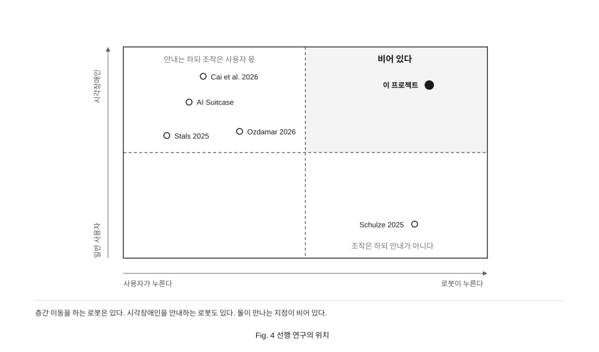
진짜 문제는 인식이 아니었습니다 — 정답지를 걷어내도 아래쪽 버튼이 눌리지 않았습니다. 원인을 찾다 보니 기구학이었습니다. 이 로봇의 팔은 좌우로 움직이지 못하고 전후로만 늘어나 닿을 수 있는 위치가 0.387 ~ 0.887 m 구간의 선분 하나로 고정됩니다. 버튼이 그 선 밖에 있으면 베이스를 옮겨야 하고, 얼마나 옮길지 계산하려면 버튼의 3D 좌표가 필요합니다. 화면 좌표만 주는 인식기로는 도달 가능 여부조차 판단할 수 없습니다.
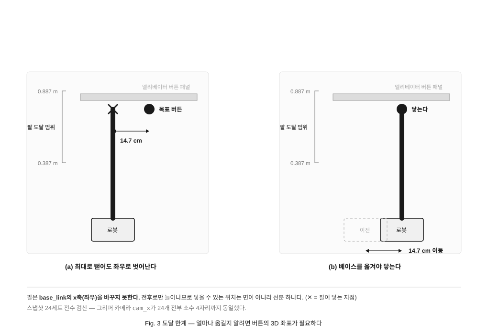
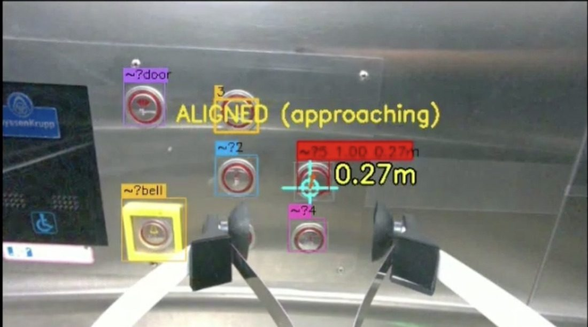
~?로 두고 배치로 추정한다.제약 — 사용자는 로봇의 실패를 볼 수 없습니다. 화면에 에러가 뜨는 것은 이 시스템에서 아무 의미가 없습니다. 그래서 음성 명령 해석에는 GPT를 쓰되, 로봇을 실제로 움직이는 결정은 LLM에 맡기지 않았습니다.
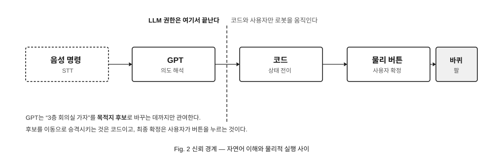
| 여정 단계 | 상태 | 바퀴 제어권 |
|---|---|---|
| ①층 지정 · 목적지 선택 | 잠금 | 정지 |
| ②승차지점 주행 | 주행 | Nav2 자율주행 |
| 핵심 단계 — ③엘리베이터 시퀀스 | 잠금 | 엘리베이터 앱 |
| ④지도 전환 · 위치 재설정 | 잠금 | 정지 |
| ⑤504호 주행 | 주행 | Nav2 자율주행 |
| ⑥도착 안내 | 잠금 | 정지 |
완주, 그리고 남은 것 — 2026년 8월, 여섯 단계가 처음으로 한 번에 이어져 1층에서 5층 504호까지 사람의 개입 없이 갔습니다. 다만 1회입니다. 같은 날 호출 버튼의 상행·하행 중 하나만 인식돼 내려오는 시나리오는 돌지 못했고, 문이 닫히기 전에 탑승을 끝내지 못하는 경우도 잦았습니다. 반복 성공률은 아직 측정하지 않았습니다.
- ROS2 Humble · Nav2 기반 자율 주행, RPLidar + RealSense D435i 환경 인식
- 그리퍼 카메라 OCR로 엘리베이터 버튼 인식·가압. 정렬까지는 자동이지만 실제 가압은 사용자 승인을 받고 실행
- 사진 + 카메라 파라미터 + 물리 통념만으로 버튼 3D 좌표를 복원. 촬영일·자세·거리가 다른 독립 3측정이 4.8 mm 안에서 일치
- 주행 중 간헐적 멈춤을 블랙박스 로그로 규명 — 1차는 주행·엘베 동시 구동(costmap 838드롭), 2차는 CPU 압박(
Control loop missed33회). 상시 43% 점유하던 시각 보조 인코딩을 요청 시점으로 옮겨 해소 - 층별 지도 전환과 AMCL 재초기화. 실패하면 4층인데 5층 지도로 달리게 되므로 따로 관리
- 사용자가 로봇의 실패를 볼 수 없다는 제약 → LLM에는 의도 해석만 맡기고, 최종 확정은 물리 버튼으로 분리
- 주행·음성·엘리베이터 모듈을 하나의 상태머신으로 통합. 모듈별로는 동작하나 합치면 깨지는 문제를 재설계로 해결
- 손잡이 하드웨어를 3D 모델링·출력하고 아두이노 압력센서를 ROS2에 연동
- Nav2 footprint를 5각형·뒤 −0.85 m로 확장해 뒤따르는 사람을 로봇 크기에 포함, 후진 차단(min_vel_x 0.0)
- 시각장애인 당사자 인터뷰로 요구사항 수집. 부정적 반응이 나온 장애물 밀기 기능은 보류
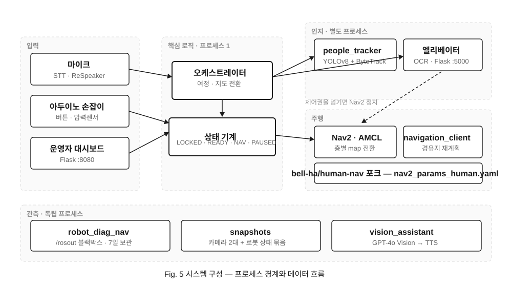
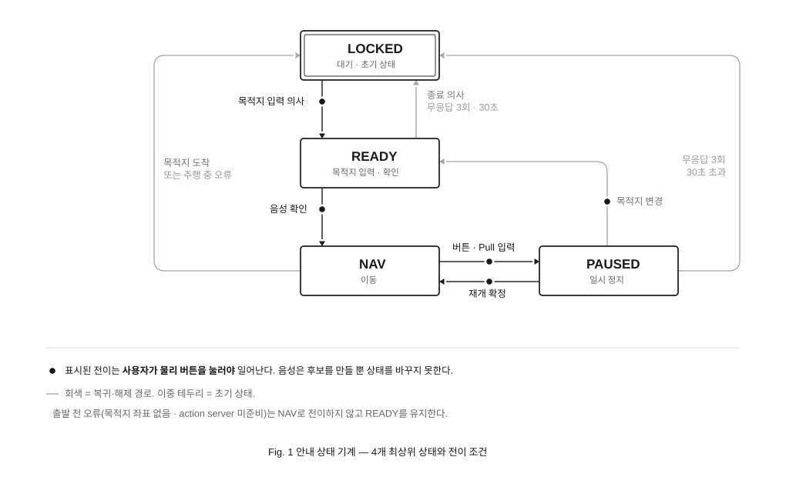
전동휠체어 자동 주차 시스템
문제 — 전동휠체어 사용자가 차에 탄 뒤, 남겨진 휠체어를 수납하려면 반드시 타인의 도움이 필요합니다. 혼자 운전하는 사용자에게는 외출 자체의 제약이 됩니다.
1차 접근과 전환 — 차량에 이미 달린 어라운드뷰 카메라를 쓰면 휠체어에 아무것도 붙이지 않아도 됩니다. 범용성 원칙에 가장 충실한 선택이었고, 8단계 파이프라인 중 7단계가 실기체에서 동작했습니다. SolvePnP 잔차가 거리·각도에 따라 체계적으로 편향되는 것을 확인해 Ridge Regression 보정층과 칼만 필터도 붙였습니다.
막힌 곳은 튜닝이 아니었습니다 — 어라운드뷰는 차량 바로 주변을 보라고 달린 장치인데, 휠체어는 그 밖에서 출발합니다. 멀어질수록 마커가 화면에서 작아지고 렌즈 주변부로 밀려나 캘리브레이션으로 메울 수 없는 구간이 남았습니다. 보정은 왜곡을 펴는 것이지 찍히지 않은 곳을 보이게 하지 못합니다. 그래서 카메라를 움직이는 쪽에 실었습니다. 대상까지의 거리가 항상 가까우면 이 문제 자체가 생기지 않습니다.
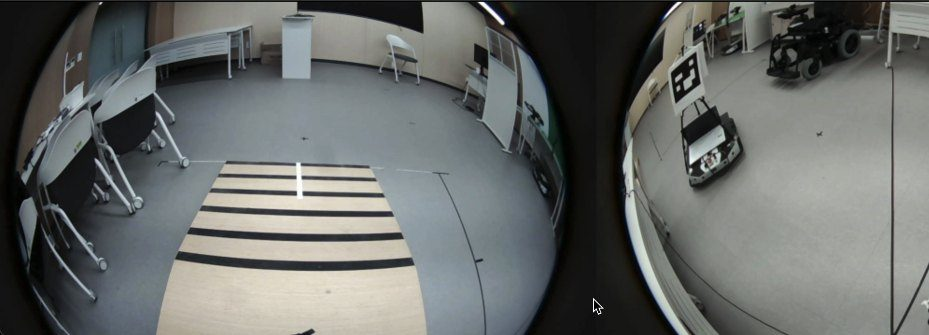
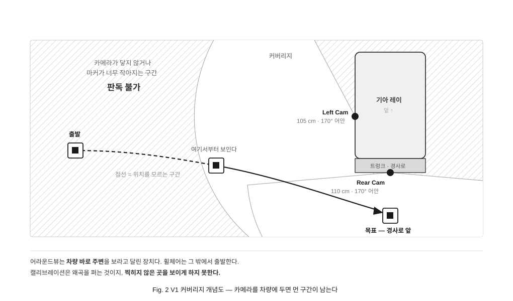
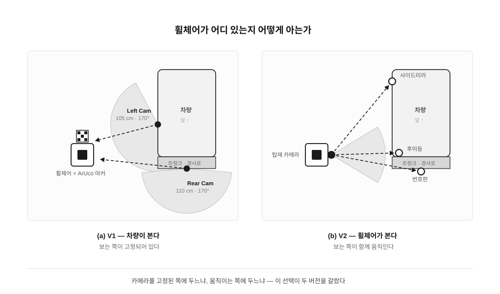
| 버전 | 방식 | 바꾼 이유 |
|---|---|---|
| V1 | 차량 어라운드뷰 카메라 + 휠체어에 ArUco 마커 | 차량 주변만 덮는 장치라 먼 구간이 남는다. 보정으로 메울 수 없다 |
| 채택 — V2 | 카메라를 휠체어로 옮겨 차량 특징점(사이드미러 · 번호판 · 후미등)을 인식 | 보는 주체가 함께 움직이면 대상이 항상 가깝다 |
| V3 | UWB 측위 검토 중 | 휠체어에 붙는 하드웨어가 계속 늘고, 카메라와 초음파가 동시에 놓치면 복구할 방법이 없다 |
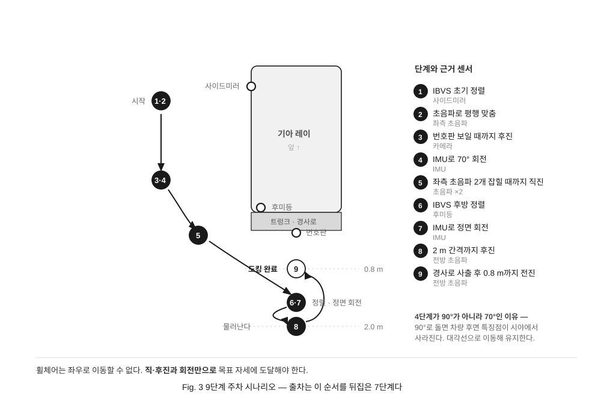

- V1 담당 — 어안 캘리브레이션 → ArUco 검출 → SolvePnP → Ridge Regression 잔차 보정층 → 칼만 필터 3단 자세추정 파이프라인 설계
- 보정층 특징 설계: 바닥거리 · 마커각도 · 시선각 · 재투영오차를 넣어 편향을 학습 기반으로 보정
- 파이프라인 8단계 중 7단계가 실기체에서 동작 (AgileX TRACER 섀시 · CAN 제어)
- V2 담당 — 공공 데이터셋의 도메인 불일치를 자체 촬영·라벨링(실차 121장 + 목업 60장)으로 해결
- 번호판 실측 규격(335 × 155 mm)과 핀홀 모델로 거리 · yaw · bearing 추정
- IBVS 정렬 + 초음파 평행 맞춤 + IMU 회전각 제어를 결합한 9단계 주차 / 7단계 출차 시나리오 구현
- 캐스터 휠 구조상 직진이 바퀴 정렬 상태에 따라 휘는 문제. 관측 불가 구간으로 규정하고 IMU 회전각 보장 로직으로 보완
- Jetson Nano(4 GB) 부하 측정: 320 px 기준 지속 15 FPS, 추론 42 ms, RAM 3.55/3.96 GB, 5.8 W. 스왑 부족 프리징을 4 GB 확장으로 해소
두리 — AI 스마트 순찰 로봇
도심 내 포트홀·점자블록 파손을 실시간으로 감지하고 자율 순찰하는 AI 로봇 프로토타입입니다.
- YOLOv8 기반 실시간 위험 요소 탐지 및 유지보수 우선순위 분류
- ROS2 + SLAM 기반 자율 주행 및 GPS 데이터 전송
- Unity 2022 환경 시뮬레이션 구현
- 크롤러형 3D 모델링 및 시스템 설계
악력 재활 훈련 시스템
문제 — 악력을 회복해야 하는 환자의 재활 훈련은 반복적이고 지루해 지속률이 낮습니다. 그런데 로드셀 원신호는 손이 닿는 순간 수십 kg짜리 스파이크가 튀고, 힘을 유지해도 값이 계속 진동해 게임 입력으로 바로 쓸 수 없습니다.
해결 — 원신호를 신뢰할 수 있는 제어 입력으로 만드는 신호처리 파이프라인을 만들고, 그 위에 악력으로 조작하는 재활 게임 3종과 실시간 신디사이저를 올렸습니다.
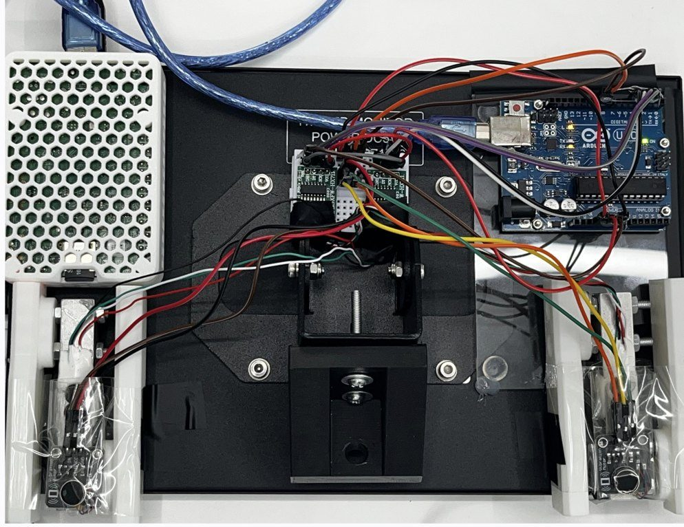
- 필터 순서가 곧 설계 지점. 스파이크를 먼저 버리지 않으면 중간값·이동평균 윈도우가 오염되고, 데드존을 먼저 걸면 스파이크가 그대로 통과
- 센서 80 Hz와 게임 루프 60 Hz의 주기 불일치를 스레드 분리 + 큐로 해결. 시리얼 읽기 지연이 프레임 드롭으로 번지지 않게 함
GripSensor추상 인터페이스에 Mock(키보드) / Arduino(USB) / 라즈베리파이(GPIO) 3종 구현. 로드셀 없이도 게임 로직을 개발·디버깅할 수 있다- 영점(Tare) 3초 + 최대 악력 5초 자동 캘리브레이션, 결과를 JSON으로 저장해 재사용
- 게임마다 요구하는 입력 특성이 달라 파이프라인 검증에 사용. 유지(풍선), 순간 입력(두더지), 좌우 차이(우주 조종), 연속 변화(신디사이저)
- 진동 모터 구동 시 오른손 센서가 끊기는 문제. 원인이 전류 부하임을 확인하고 NPN 트랜지스터(2N2222) 구동으로 회로 변경
- 로드셀 마운트를 3D 모델링·출력, 아두이노 시리얼 프로토콜 직접 설계
Software & AI
아티스트 홍보 플랫폼 SEIHI
문제 — 음악 아티스트는 자기 작업을 모아 보여줄 곳이 없습니다. 인스타는 흐르고, 사운드클라우드는 음원만 담고, 웹사이트는 만들 줄 모릅니다.
까다로운 지점 — 아티스트마다 보여줄 것이 다릅니다. 세션 연주자는 참여 앨범 이력이, 미디어아트 작가는 전시 사진이 본체입니다. 같은 틀에 넣으면 누군가는 항상 어색해집니다.
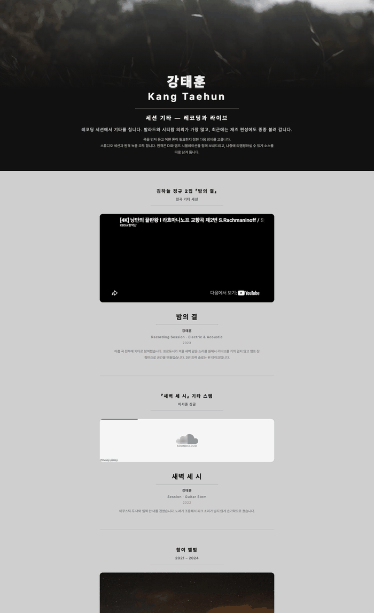
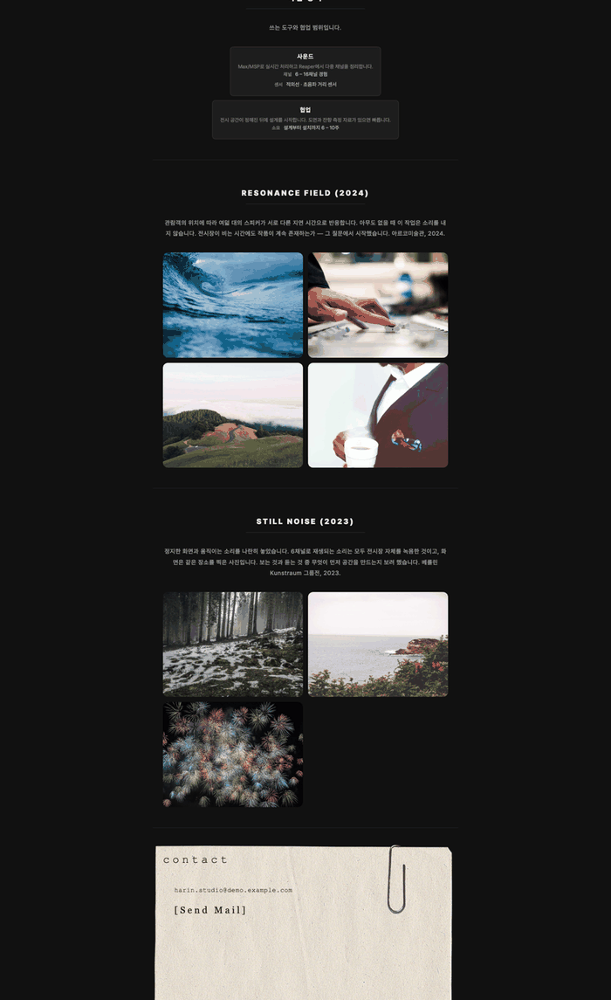
가장 고민한 것 — 콘텐츠 구조가 가변적이라
JSON 컬럼 하나에 통째로 담는 쪽이 가장 간단했습니다.
그러면 장르별·직업별 검색을 붙일 수 없고, 템플릿을 바꿀 때 마이그레이션 경로가 없습니다.
템플릿별로 정규화한 스키마를 택했습니다.
직업 분류도 상수로 박지 않고 2단 카테고리에 다대다로 뒀습니다 — 직업이 늘어도 코드 배포 없이 행만 추가하면 됩니다.
운영 중인 DB 하나에만 의존하고 있었습니다 —
서버가 뜰 때마다 ALTER TABLE과 FK 재생성이 실행되는 구조였습니다.
변경 이력도 롤백 수단도 없어 모델 정의와 실제 스키마가 어긋났고,
빈 DB에 붙여보니 기동조차 되지 않았습니다.
그 하나뿐인 운영 DB만 우연히 동작하고 있었던 겁니다.
그냥 자동 생성을 돌리면 FK를 전부 삭제하는 마이그레이션이 나옵니다.
운영 스키마를 먼저 뽑아 모델과 대조하고 차이를 하나씩 판정한 다음 이력을 시작했습니다.
그 과정에서 FK ON DELETE CASCADE 27개가 운영에만 있고 모델에는 없다는 것을 찾았습니다 —
그대로 새 환경을 만들었으면 사용자 삭제가 FK 위반으로 죽었을 겁니다.
중복이 버그를 낳고 있었습니다 —
profile.py 898줄 중 약 600줄이 템플릿 1과 2의 같은 코드였습니다.
레지스트리로 통합해 271줄로 줄였는데, 그 과정에서 실제 버그가 함께 해결됐습니다 —
공개 목록이 템플릿 1 테이블만 조회해, 템플릿 2만 쓰는 아티스트는
카테고리 목록에서 영영 노출되지 않고 있었습니다. 같은 성격의 검색 API는 둘 다 보고 있었고요.
- 회원가입이 이메일 인증을 확인하지 않아 API를 직접 호출하면 미인증 주소로 가입됐습니다. 인증 상태를 확인하고 소비하도록 고치고, 시도 제한과 재발송 쿨다운을 넣었습니다
- 편집 화면에 구현되지 않은 템플릿 버튼이 있어, 누르면 자기 공개 페이지가 404가 되는데 경고가 없었습니다. 화면에서 비활성화하고 서버도 등록된 번호만 받도록 했습니다 — 화면만 막으면 API로는 뚫립니다
- 저장이 네 섹션 병렬이라 하나만 실패해도 나머지는 이미 저장됐습니다. 순차로 바꿔 첫 실패에서 멈추고, 서버가 보내는 사유를 그대로 보여줍니다
- 로컬 가입 · Google OAuth · 이메일 OTP로 진입 경로가 셋이었습니다. 이후 요청은 전부 하나의 JWT로 수렴시켰습니다
- FastAPI(async) · PostgreSQL(Neon) · React 18 + TypeScript · Cloudinary · Docker Compose · pytest 86개
단국대학교 뉴뮤직학부 연습실 예약 시스템
문제 — 연습실 예약을 카톡과 구두로 하다 보니 중복 예약과 분쟁이 반복됐습니다. 예약 시스템을 만들면 되는 일처럼 보이지만, 실제로 어려운 것은 화면이 아니라 어떤 예약을 거절해야 하는가였습니다.
목록으로는 안 됩니다 — 연습실이 55실이고 이름이 124-2, 222-11 같은 번호입니다.
목록으로 늘어놓으면 학생은 그 방이 어디 있는지 알 수 없습니다.
평면도로 보여줘야 하는데, 평면도를 이미지 한 장으로 넣으면 공사나 용도 변경이 있을 때마다
이미지를 새로 만들고 좌표를 코드에 다시 박아 재배포해야 합니다.
배치가 바뀌는 주체는 학과 사무실인데 그것을 반영하는 주체는 개발자가 됩니다.
해결 — 평면도를 그리는 데 필요한 좌표 자체를 데이터로 뒀습니다.
cells(floor, x, y)는 복도와 벽이 차지하는 칸, rooms.pos_x/pos_y는 방 이름표 자리입니다.
관리자가 화면에서 펜으로 복도를 긋고 이름표를 얹으면 그 값이 그대로 저장되고,
학생 화면은 그 데이터를 읽어 평면도를 그립니다.
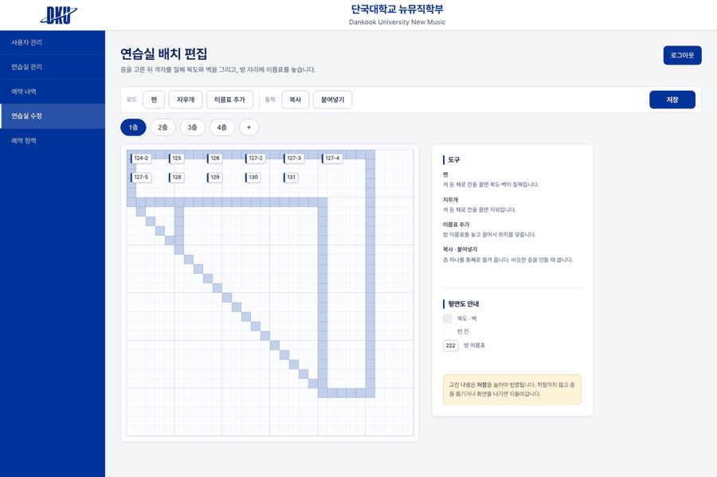
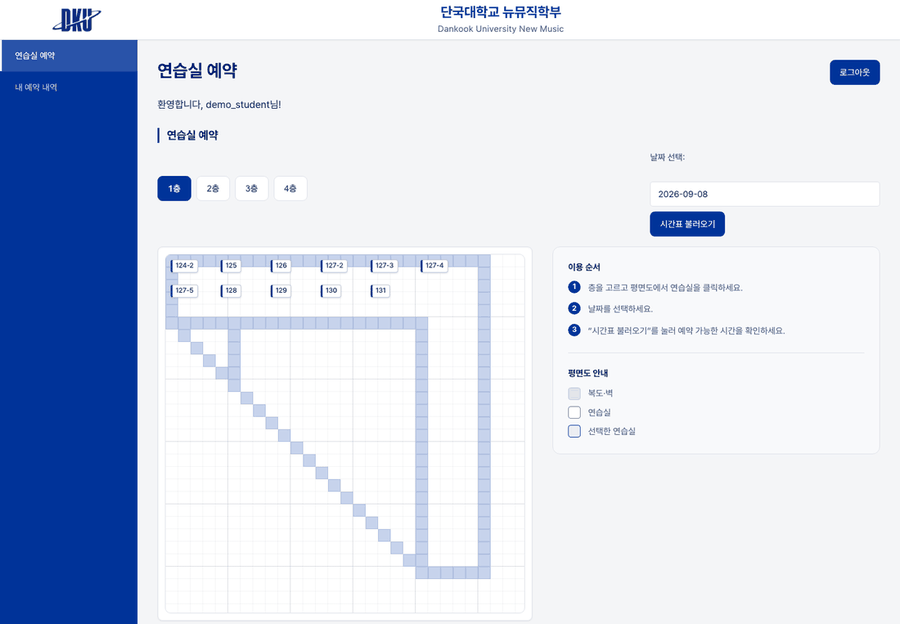
같은 판단을 정책에도 — 최대 예약 시간, 취소 마감, 운영 시간, 주간 오픈 시점이 전부 코드에 상수로 박혀 있었습니다. 규칙 하나 바꾸려면 재배포해야 합니다. 이 값들을 실제로 바꿔야 하는 사람은 학과 사무실이지 개발자가 아닙니다. DB로 옮기고 관리자 화면을 붙였습니다.
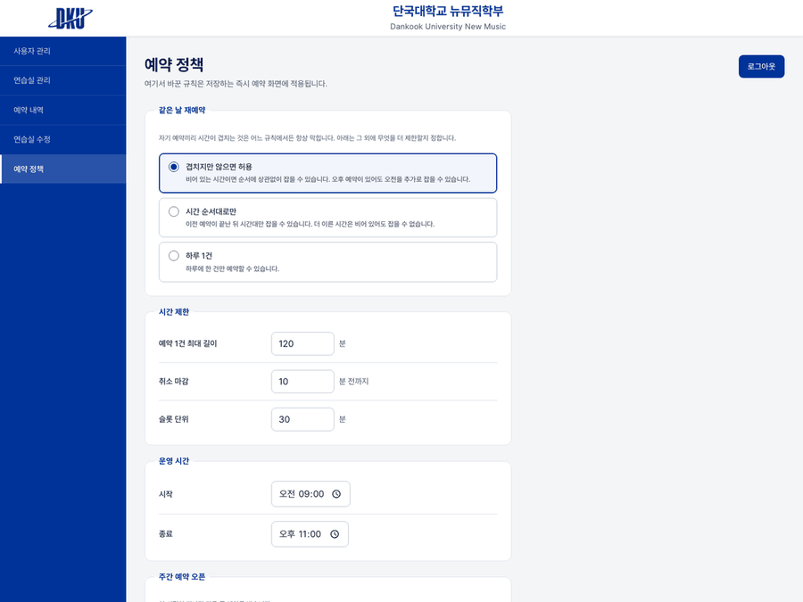
키로 표현할 수 없는 제약이 있었습니다 — 예약 생성이 충돌 검사(SELECT) 다음에 생성(INSERT)이라, 두 요청이 같은 순간에 오면 둘 다 통과합니다. 주 단위로 금요일 9시에 열려 요청이 몰리는 구조라 실제로 터질 수 있었습니다.
처음에는 (room_id, start_date, start_time) 유니크 제약을 생각했습니다.
그런데 예약 길이가 1~2시간 가변이라 09:00-11:00과 10:00-12:00은
시작 시각이 달라 제약을 통과하면서 시간은 겹칩니다.
SELECT ... FOR UPDATE도 아니었습니다. 존재하는 행만 잠그기 때문에,
겹치는 예약이 아직 없는 상황 — 오픈 직후, 경쟁이 가장 심한 바로 그 순간 — 에는 잠글 대상이 없습니다.
해결 — pg_advisory_xact_lock으로 방·날짜 단위 잠금을 걸었습니다.
방은 음수, 사용자는 양수로 키 공간을 나눠 충돌을 없애고, 획득 순서를 방→사용자로 고정해 데드락을 막았습니다.
세션이 아니라 트랜잭션 레벨이어야 했는데, DB 커넥션 풀러가 트랜잭션 모드라
세션 락은 다른 커넥션에서 풀릴 수 있기 때문입니다.
8명이 같은 슬롯을 동시에 요청하는 시험에서 1건만 통과하고 DB에도 1행만 남는 것을 확인했습니다.
운영 중에 발견한 것 — 비밀번호가 해싱 없이 저장되고 있었습니다. 저장·전송·화면 표시 세 단계가 모두 평문이었고, 관리자 화면에는 학생 비밀번호를 보여주는 버튼까지 있었습니다. 이미 쓰는 사람이 있어 한 번에 바꿀 수 없어, 로그인할 때 저장값이 해시가 아니면 평문으로 인증하고 성공 즉시 bcrypt로 다시 저장하는 방식으로 옮겼습니다. 학생은 아무것도 하지 않아도 다음 로그인 한 번으로 전환됩니다. 해시로 바꾸면 관리자도 원래 값을 알 수 없으므로, 임시 비밀번호 발급 경로를 함께 만들었습니다.
제약이 코드에만 있었습니다 — 업무 규칙을 전부 파이썬이 검사하고 있어,
SQL로 직접 넣으면 15:00~13:00 같은 예약도 그대로 들어갔습니다.
관리자가 DB를 만지거나 배치가 붙으면 코드의 검사는 우회됩니다.
CHECK · UNIQUE · 인덱스 10개를 적용하고, 넣기 전 위반 데이터가 0건인 것과
넣은 뒤 다섯 경우가 전부 차단되는 것을 확인했습니다.
- 재예약 검사가 새 예약 시각이 아니라 현재 시각을 비교하고 있었습니다. 같은 날 두 번째 예약이 시간대와 무관하게 전부 막혔고, 그 결과 한 사람이 같은 시간에 여러 방을 잡는 것을 막는 검사가 실행조차 되지 않았습니다
- 날짜와 시각을 따로 저장해 비교하면 배포 서버가 UTC일 때 9시간이 어긋납니다.
모든 시각 비교에
Asia/Seoul을 명시했습니다 - 테스트가 없어
pytest26개를 만들었습니다. 정책 테스트는 값을 바꾼 뒤 동작이 실제로 갈리는지를 봅니다 — 나중에 누가 하드코딩 상수로 되돌리면 여기서 잡힙니다 - FastAPI · PostgreSQL(Neon) · Docker Compose · JWT · pytest 26개
실시간 표정 인식을 이용한 감정 기반 TTS 보컬 합성 시스템 연구
사용자의 얼굴 표정을 실시간으로 인식하여 감정 상태를 추정하고, 이를 보컬 합성(Text-to-Speech)에 즉시 반영하는 감정 기반 TTS 시스템을 설계·구현한 학사학위 논문입니다.
- MediaPipe 및 CNN 기반 실시간 표정 인식(FER) 모듈 구현
- 지수이동평균(EMA) 및 다수결 투표 기반 감정 안정화 기법 적용
- Flask 서버를 통한 감정–TTS 매핑 파이프라인 설계
- OpenAI TTS API를 활용한 실시간 감정 보컬 합성
- 웹 기반 UI를 통해 문장 단위 감정 태그 자동 생성
생성형 AI 기반 맞춤형 반도핑 예방교육 시스템 개발
연세대학교 AI 혁신연구원 프로젝트로, 2026년 8월부터 진행하고 있습니다. 선수 경기력 데이터와 생성형 AI를 결합한 맞춤형 도핑 예방교육 시스템을 개발하고 있습니다.
- LLM 기반 생성형 AI 모듈과 예방교육 DB를 연계한 RAG 파이프라인 구축
- 선수 프로파일링과 사용자 역할을 반영한 개인화 프롬프트 설계
- 응답 범위 제한·전문가 상담 안내 등 환각(hallucination) 억제 안전장치 구현
WGBS 유전체 분석 자동화 데스크톱 프로그램
서울대학교·연세대학교 연구진과 함께 진행한 유전체 분석 자동화 프로젝트에서 Python 애플리케이션 개발을 담당했습니다. 기존에 연구자가 명령줄에서 여러 도구를 오가며 수작업으로 수행하던 다단계 분석 과정을, 프로그래밍 경험이 없는 연구자도 사용할 수 있는 GUI 프로그램으로 통합했으며 실제 연구 데이터의 전 과정 분석에 사용되었습니다.
- Tkinter 기반 6단계 순차 진행형 UI 설계 및 단계 이동 시 입력 검증으로 실행 전 오류 차단
- 장시간 연산을 백그라운드 스레드로 분리하여 실행 중 화면 멈춤 현상 방지
- 기존 분석 모듈의 콘솔 출력을 코드 수정 없이 GUI 로그로 실시간 중계하는 구조 설계
- 실행 환경 자동 탐지 및 단일 실행 파일 배포 구성으로 별도 설치 과정 제거
※ 특허 출원 준비 중으로 소스 코드는 비공개입니다.
Cloud-Native Kubernetes Cluster Infrastructure
CloudStack 환경에서 프로덕션 수준의 Kubernetes 클러스터를 Infrastructure as Code 방식으로 설계 및 자동화한 프로젝트입니다.
- Terraform으로 노드를 프로비저닝하고, Ansible로 마스터 준비 → Calico CNI → 워커 조인 → MetalLB 준비 → 앱 배포까지 순서를 자동화
- 퍼블릭 로드밸런서가 없는 CloudStack 환경이라
type: LoadBalancer서비스가 대기 상태에 머뭅니다. MetalLB를 L2 모드로 올려 IP 풀에서 외부 IP를 직접 할당하도록 구성했습니다 - Jenkins + GitLab CI/CD · 노드별 SSH 포트 분리(마스터 22 / 워커 2202)
Game
DelRev — 3D 잠입 액션 게임
플레이어 캐릭터가 가정용 도우미 로봇입니다. 경쟁사 정보를 빼내려고 도우미 로봇으로 위장한 스파이가 가정주택 · 유치원 · 연구소 · 공장에 잠입해 임무를 수행하고, 방해자에게서 도망칩니다. 10개월간 4인 팀으로 만든 졸업작품입니다. 로봇에서 다루던 것 — 실시간 상태 관리, 센서 기반 판단, 소리로 상태를 알리는 일 — 을 그대로 게임 안에서 다뤘습니다.
긴장을 무엇으로 만드나 — 잠입 게임에서 플레이어를 조마조마하게 만드는 것은 적이 아니라 욕심입니다. 맵을 끝까지 털면 안전하지만 날짜가 가고, 빨리 나오면 할당량이 모자랍니다. 게임이 다음 목적지를 정해 주지 않고 플레이어가 지도에서 직접 고르게 했습니다. 상점에서 배터리나 시계를 사면 그만큼 코인이 줄어, 그 소비도 같은 저울에 올라갑니다.
그런데 플레이어는 게이지를 보지 않습니다 — 잠입 중에는 적을 보고 있고, 다음에 어디로 숨을지 생각합니다. 화면 구석의 막대를 볼 여유가 없습니다. 그래서 위험도를 눈이 아니라 귀로 옮겼습니다. 틱 간격과 볼륨을 4구간으로 나눠, 위험할수록 심장박동처럼 빨라집니다. 값에 정비례해 줄이면 변화를 알아채지 못합니다 — 단계가 바뀌는 순간이 있어야 몸이 반응합니다. 경계 수치는 플레이테스트로 잡았습니다.
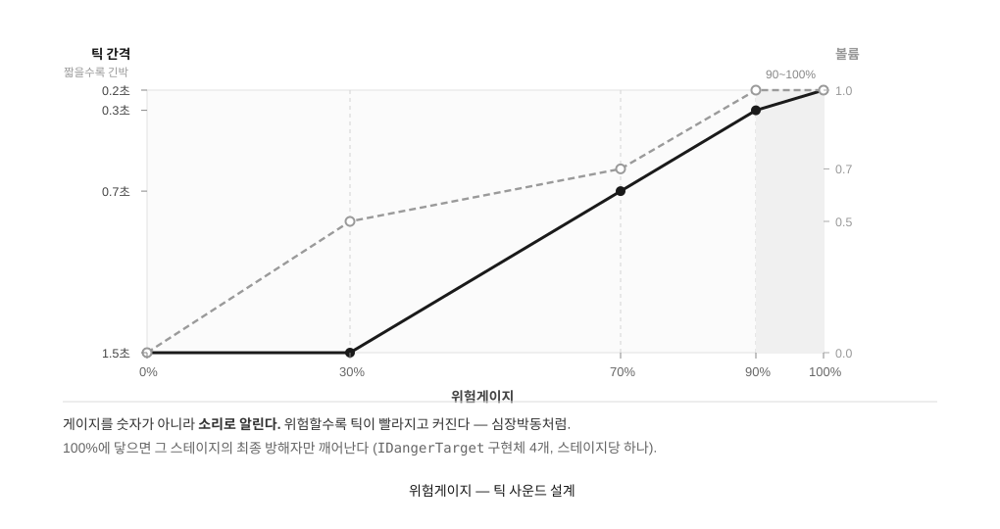
100%에 닿으면 그 스테이지의 최종 방해자만 깨어나 업무 구역 안까지 쫓아 들어옵니다.
플레이어가 믿고 있던 규칙을 마지막에 깨는 장치입니다.
깨우는 방식은 맵마다 다른데, 게이지가 그 차이를 전부 알게 만들면 맵을 붙일 때마다 게이지를 고쳐야 합니다.
그래서 게이지는 다 찼다는 사실만 통보하고 무슨 일이 일어날지는 각 방해자가 정합니다 —
IDangerTarget의 구현체는 스테이지마다 하나씩, 정확히 네 개입니다.
제일 화가 나는 순간은 왜 들켰는지 모를 때입니다 — 그래서 연구소 CCTV는 플레이어를 보는 순간 경비원을 부르지 않습니다. 시야 안에 3초 이상 머물러야 호출이 나갑니다. 스쳐 지나가는 것과 들키는 것을 구분해 주지 않으면 플레이어는 자기가 무엇을 잘못했는지 모른 채 쫓기게 됩니다. 감지하는 객체와 쫓아오는 객체를 분리해서 CCTV를 피하는 것만으로 추격을 끊을 수 있게 했고, 같은 구조를 연구소 CCTV → 경비원, 가정주택 카메라 → 개, 공장 포탑 → 경비 로봇 세 맵에서 반복했습니다. 규칙이 일정해야 플레이어가 배웁니다.
| 몬스터 | 상태 |
|---|---|
| Mom 가정주택 | None · Patrol · Chase · Return · Alert |
| Dog 가정주택 | Patrol · Chase · Return · Called |
| Director 유치원 | Greeting · Patrol · Chase · Alert |
| SecurityGuard 연구소 | Patrol · CCTV · Chase |
| Researcher 연구소 | Idle · Chase · Return |
공통 부모 클래스를 두지 않았습니다. 상태 구성이 서로 달랐기 때문입니다.
Mom · Dog · BlueEyeCat · Researcher 넷만
Return을 가집니다 — 추격을 포기하고 제자리로 돌아가는 상태입니다.
이게 없으면 한 번 들킨 플레이어는 맵이 끝날 때까지 쫓깁니다.
곰인형에는 일부러 넣지 않았습니다. 물러서지 않는 적이 하나는 있어야 했습니다.
상태를 빼는 것도 설계였습니다.
사운드 — 58개를 설계·구현하고 CHR · MON · EVT · AMB · BGM · SFX · UI 접두사로 분류했습니다.
발소리는 바닥 재질별로 변주를 두고, 이동 속도 3단계에 따라 간격을 바꾸며,
발이 닿는 순간 카메라를 흔듭니다. 소리와 화면을 같이 설계해야 걷는 느낌이 나옵니다.
유치원 배경음악은 동요를 무너뜨리는 방식으로 만들었습니다. 같은 동요를 단2도 올려 겹치고 주파수를 미세하게 어긋내 불안을 만든 뒤, 증4도 — 가장 불안정한 음정 — 로 다시 겹칩니다. 그리고 전부 끊습니다. 공백 자체가 공포가 됩니다. 컷신과 인트로는 Foley와 디지털 신스를 병행해 직접 제작하고, 움직임 · 카메라 컷 · 장면 전환에 타이밍을 맞췄습니다.
트러블슈팅 — 씬을 넘어갈 때 아이템이 사라졌습니다. 맵을 오갈 때마다 씬을 새로 로드하는데, Unity는 씬을 언로드하며 그 씬의 오브젝트를 전부 파괴합니다. 들고 있던 아이템도, 트레일러에 실어 둔 아이템도 같이 사라졌습니다. 원인이 하나가 아니라 네 겹이었습니다.
| 원인 | 대응 |
|---|---|
①DontDestroyOnLoad는 루트 오브젝트에만 걸린다자식에 호출하면 조용히 무시되고 부모와 함께 죽는다 |
SetParent(null)로 먼저 루트 분리 |
| ②트레일러에 실으면 자식이 되어 다시 걸린다 | 자식으로 넣으면서 그 아이템도 각각 보호 |
| ③씬 재로드 시 트레일러가 두 개가 된다 | scene.name으로 원본을 판별해 새 쪽을 제거 |
| ④초기화가 끝나기 전 트리거가 발동한다 | isValid 플래그로 준비 전 입력 차단 |
못 잡은 것도 있습니다 — Day가 0으로 되돌아가는데 원인을 찾지 못해,
값이 대입되는 순간의 호출 스택을 찍게 해두고 추적했습니다.
잡을 때까지 사용자에게 영향이 가지 않도록 임시 방어를 두고,
코드에 "응급 패치"라고 적어 두었습니다 — 나중에 정상 로직으로 오해되지 않도록.
- 플레이어 —
PlayerController싱글톤으로 체력·스태미나를 전역 노출해Damage·Inventory·MapTracker가 붙게 설계. 씬 전환 시 스탯 자동 초기화로 맵 간 이동에 대응 - 피격 연출 — 체력 감소 하나에 카메라 흔들림 · 화면 플래시 · 사운드가 함께 걸리도록
Damage를 단일 진입점으로 분리 - 방해자 AI — NavMesh 순찰 + 시야 Raycast 기반 FSM. 감지 조건을 몬스터마다 다르게 뒀습니다 — 시야각 60° 고정형(
Teacher), 웅크리면 미감지(DollMonster), 조작을 묶고 문제를 풀게 하는 비전투형(SmartKid), 플래시로 시야를 마비시키는 특수형(Security_B) - 위험게이지 — 채움/감소 로직, 4구간 틱 사운드 곡선,
IDangerTarget인터페이스 설계 - 몬스터 AI — 가정주택 · 유치원 · 연구소 몬스터와 스테이지 최종 방해자 4종. NavMesh 순찰 경로, 시야 Raycast, 추적/복귀 전이
- 맵 · 진행 — 문/열쇠 상호작용, 맵 추적, 씬 전환, 아이템 제출 시스템
- 사운드 — 58개 설계·구현, 발소리 재질별 변주 + 속도 3단계 간격 + 카메라 흔들림 연동
- 공장 로봇 계열(드론 · 포탑 · 용접) · 세이브 · 부팅 · 상점 · 환경설정은 권예진, 유치원 방해자 계열(
Teacher·DollMonster·SmartKid)은 김도현이 만든 파일 위에 이어 작업했습니다
Music Technology
서울 마장중학교 오케스트라·밴드부 방과후 지도 강사
오케스트라·밴드부 학생들의 파트 점검과 합주를 지도하고, 연주회 무대를 준비했습니다.
- 파트별 점검 및 팀별 합주 지도
- 마장중학교 연주회 무대 지도 및 피드백
게임 사운드팩 — 여섯 장르
장르마다 필요한 소리가 다릅니다 — 게임 사운드·음악 제작사 QLAUDIO에서 2024년 한 해 동안 프리랜서로 일했습니다. 특정 게임에 납품한 것이 아니라, 여섯 장르의 사운드팩을 만들어 상품으로 판매했습니다. 장르마다 어떤 소리가 필요한지를 먼저 정하고 한 벌씩 채워 넣는 작업이었습니다.
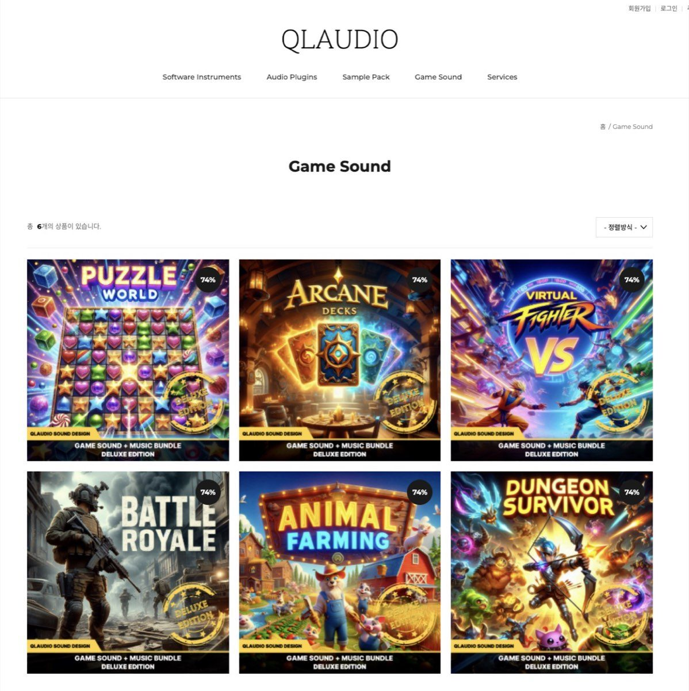
| 사운드팩 | 담은 소리 |
|---|---|
| FPS · 배틀로얄 | 발사 · 피격 · 재장전. 같은 총이라도 원거리 · 근거리 · 실내를 따로 만들었다 |
| 액션 격투 | 타격음. 저음을 얼마나 싣느냐로 같은 동작의 무게가 달라진다 |
| 다크 판타지 RPG | 스킬음과 환경음. 잔향으로 공간의 크기를 표현했다 |
| 캐주얼 퍼즐 | UI음과 성공 · 실패음. 수백 번 반복되므로 짧고 다양하게 만들었다 |
| 캐주얼 시뮬레이션 | 조작 확인음. 가볍고 밝은 UI 사운드 |
| 카드 전략 | 뽑기 · 내기 · 파괴. 화면을 보지 않아도 무엇이 일어났는지 구별되게 만들었다 |
카드 전략의 "화면을 보지 않아도 구별되게"는 이후 DelRev에서 위험도를 숫자가 아니라 소리로 옮길 때 그대로 쓰인 판단입니다. 소리를 만드는 사람이 재생 시점까지 코드로 정하면 외주 왕복 없이 그 자리에서 고칠 수 있습니다.
국립국악원 국악 음원 규격화 및 아카이빙
국립국악원 음원을 대상으로 사운드 규격 제작과 음질 균일화 후반 작업을 수행했으며, 국립국악원 × Qlaudio 국악기 사운드 정리 프로젝트에 협업으로 참여했습니다.
- 성악 음원의 손상 복원 및 노이즈 제거
- 아카이빙을 위한 사운드 품질 표준화
- 포맷·파일명 통일 및 음원 데이터 정리
- 국악기 음원 데이터 정리 및 포맷 통일 (Qlaudio 협업)
- 정리된 음원은 국악 가상악기 「조선 시리즈」(36종 국악기)로 제작·출시
단편영화 「After Session」 음악 제작
권혁준 감독의 단편영화 「After Session」의 음악을 제작했으며, 영화의 정서와 흐름에 맞춘 작곡 및 사운드 디자인을 진행했습니다.
- 영화 장면 분석 기반 음악 구성
- 작곡 및 편곡
- 최종 믹싱 및 납품
인터랙티브 사운드 & 퍼포먼스 작업
인터랙션과 사운드를 결합한 퍼포먼스 및 실험적 작업들입니다.
- MediaPipe 기반 제스처 인식
- Max/MSP를 활용한 실시간 사운드 제어
- Unity 기반 공간 음향 연동